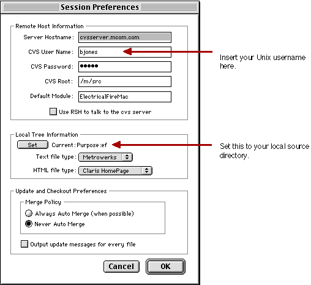
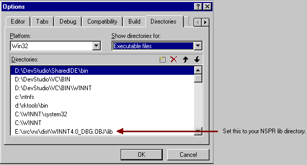

Electrical FireBuilding Electrical Fire |
|
Metrowerks:Metrowerks CodeWarrior:CodeWarrior Plugins:Compilers
Metrowerks:Metrowerks CodeWarrior:CodeWarrior Plugins:V2 Preference Panels
Metrowerks:CodeWarrior MPW:MPW:Tools
Metrowerks:CodeWarrior MPW:MPW
Note: You will need to open the file and modify the MOZ_SRC variable to point to where the ns folder will be stored.

The canonical development environment for Windows platforms is NT 4.0, using MSVC 5.0.
cvs co nstools
It is not necessary that nstools and the Electrical Fire sources reside in related directory trees, i.e. you can create C:\nstools to contain your build tools and D:\ns\electricalfire for ef sources.
set NSTOOLS=C:\nstools
set PATH = C:\nstools\bin;%PATH%
Note: It is important that the nstools directory appear before any
other possibly conflicting directories in the PATH variable. For
example, the gmake and uname supplied in the MKS toolkit is not compatible
with the versions of these tools in the nstools directory.
cvs co ns\electricalfire
cvs co -r b19970926 ns\nspr20
cd ns\nspr20
gmake export
Note: The current revision tag pulls the NSPR20 libraries that EF uses. This will be regulary updated as needed.

ns\electricalfire\Driver\StandAloneJava\winbuild\ElectricalFire.dsw